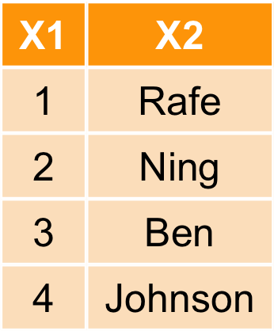
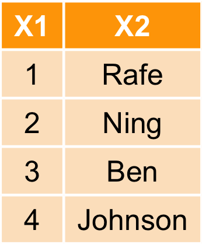
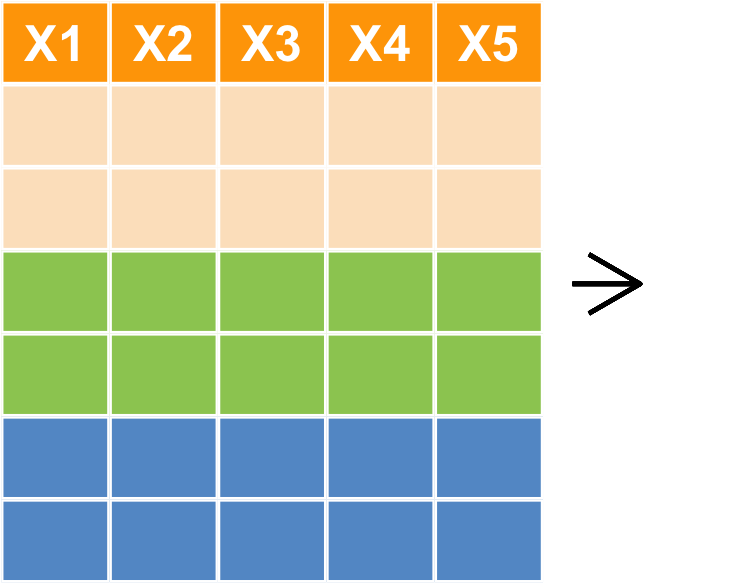

國立政治大學統計所碩二 林芃彣
Experience
- 健保資料庫分析團隊
- 給軟體工程師的R語言精要班助教
- D4SG資料英雄計畫 #3
- 無象限有限公司Intern (2017.10-now)
- 2017 第一屆政大資料競賽 亞軍
- 2017 Asia Open Data HACKATHON 最佳黑客獎
- 2017 台電能源永續黑客松 第三名
Skills
- R
- SQL Server
國立政治大學統計所碩二 林芃彣
這些都是R可以辦到的事情！
先搞定怎麼把資料讀進來！
先搞清楚所在路徑位置！
getwd 查詢目前所在的資料夾路徑 (絕對路徑)setwd 設定所在的資料夾路徑 getwd()
[1] "/Users/apple/nicole/R code/Github/2017NCCU_R"
# Mac
setwd("/Users/apple/nicole/R code")
# Windows 若複製路徑記得要改斜線！
# D:\桌面\PONG\Rcode
setwd("D:/桌面/PONG/Rcode")
dat <- read.csv("hsb.csv")
讀取自己電腦裡的csv檔/txt檔
# 方法1. 透過介面選擇檔案所在路徑
path <- file.choose()
dat <- read.csv(path)
# 方法2. 自行輸入檔案絕對路徑
path <- "/Volumes/LEEF SURGE/LearnR/hsb.csv"
dat <- read.csv(path)
dat <- read.table("/Volumes/LEEF SURGE/LearnR/hsb.txt")
# 方法3. 相對路徑
dat <- read.csv("hsb.csv")
dat <- read.table("hsb.txt")
read.csv 讀取 csv 檔 (一種以逗點分隔欄位的資料格式)# 可以使用R指令來下載
url <- "https://pongponglin.github.io/2017NCCU_R/data/hsb.csv"
download.file(url, destfile = "hsb.csv") # 把檔案另存成hbs.csv
dat <- read.csv("hsb.csv")
head(dat)
id sex race ses schtyp prog read write math science socst 1 70 male White 1 public general 57 52 41 47 57 2 121 female White 2 public vocational 68 59 53 63 61 3 86 male White 3 public general 44 33 54 58 31 4 141 male White 3 public vocational 63 44 47 53 56 5 172 male White 2 public academic 47 52 57 53 61 6 113 male White 2 public academic 44 52 51 63 61
path <- "wrong_file_path" dat <- read.csv(file = path)
Error in file(file, "rt") : 無法開啟連結 此外: Warning message: In file(file, "rt") : 無法開啟檔案 'wrong_file_path' ：No such file or directory
getwd了解R 當下的路徑位置path <- "hsb.csv" dat <- read.csv(file = path, header = TRUE, sep = "1")
Error in read.table(file = file, header = header, sep = sep, quote = quote, : more columns than column names
url <- "https://pongponglin.github.io/2017NCCU_R/data/%E8%B2%B7%E8%B3%A3st_A_10109_10109.csv"
dat <- read.csv(url)
Error in make.names(col.names, unique = TRUE) : 無效的多位元組字串於m
# 利用`fileEncoding`參數選擇檔案編碼 - big5 / utf8 dat2 <- read.csv(url, fileEncoding = "utf8")
利用write.csv將data.frame格式的R物件另存成csv檔
write.csv(dat, "hsb_new.csv", row.names=FALSE, fileEncoding = "utf8")
readLines也可以用來讀取檔案writeLinesoutput <- file("data/output.txt")
writeLines(as.character(1:12), con = output)
input <- readLines(output)
input
[1] "1" "2" "3" "4" "5" "6" "7" "8" "9" "10" "11" "12"
readLines("data/hsb.csv", n=5, encoding = "utf-8")
[1] "id,sex,race,ses,schtyp,prog,read,write,math,science,socst" [2] "70,male,White,1,public,general,57,52,41,47,57" [3] "121,female,White,2,public,vocational,68,59,53,63,61" [4] "86,male,White,3,public,general,44,33,54,58,31" [5] "141,male,White,3,public,vocational,63,44,47,53,56"
# install.packages("foreign") # 安裝R套件 foreign
library(foreign) # 載入套件
cars <- read.spss("data/Cars.sav", to.data.frame = TRUE)
milk <- read.dta("data/p004.dta")
# head(cars)
# head(milk)
sas7bdat package# install.packages("sas7bdat")
library(sas7bdat)
airline <- read.sas7bdat("data/airline.sas7bdat")
head(airline)
YEAR Y W R L K 1 1948 1.214 0.243 0.1454 1.415 0.612 2 1949 1.354 0.260 0.2181 1.384 0.559 3 1950 1.569 0.278 0.3157 1.388 0.573 4 1951 1.948 0.297 0.3940 1.550 0.564 5 1952 2.265 0.310 0.3559 1.802 0.574 6 1953 2.731 0.322 0.3593 1.926 0.711
if來進行判斷{ }裡面# 判斷x是否大於2, 如果是，則印出結果
# cat是什麼？輸入：?cat
x <- 4
if(x > 2){
cat(x, "is larger than 2")
}
4 is larger than 2
if來進行判斷{ }裡面# 判斷x是否大於2, 如果是，則印出結果 x <- 4 if(x > 2) cat(x, "is larger than 2")
4 is larger than 2
elsey <- 1
if(y > 2){
cat(y, "is larger than 2")
}else{
cat(y, "is smaller than 2")
}
1 is smaller than 2
elseifelse函數進行簡化，而且該函數支援向量化運算 (後述)y <- 1 ifelse(y > 2, "larger than 2", "smaller than 2")
[1] "smaller than 2"
z <- 1:5 ifelse(z > 2, "larger than 2", "smaller than 2")
[1] "smaller than 2" "smaller than 2" "larger than 2" "larger than 2" [5] "larger than 2"
if, else if, …, elsey <- 2
if(y > 2){
cat(y, "is larger than 2")
}else if(y < 2){
cat(y, "is smaller than 2")
}else{
cat(y, "is equal to 2")
}
2 is equal to 2
for loop:可用來重複執行某段程式碼x <- 0
for (i in 1:10) {
x <- x+i
print(x)
}
[1] 1 [1] 3 [1] 6 [1] 10 [1] 15 [1] 21 [1] 28 [1] 36 [1] 45 [1] 55
x <- 0
for(i in 1:10){
if(i %% 2 !=0) { # x是否為奇數
x <- x + i
}
}
x
[1] 25
# 檢查 1+3+5+7+9
[1] 25
\t = tab鍵, \n = 換行x <- 0
k <- 0
for(i in 1:3){
for(j in 1:3){
cat(paste(i, "*", j, "=", i*j, ",\t", sep=""))
k <- k + 1
x[k] <- i*j
}
cat("\n")
}
1*1=1, 1*2=2, 1*3=3, 2*1=2, 2*2=4, 2*3=6, 3*1=3, 3*2=6, 3*3=9,
* ** *** **** *****
*
***
*****
*******
*********
***********
*************
***************
*****************
*******************
function)myfun <- function(x){
# 函式內容
}
myif <- function(x){ # 這個function有一個變數x
if(x > 2){
cat(x, "is larger than 2")
}else if(x < 2){
cat(x, "is smaller than 2")
}else{
cat(x, "is equal to 2")
}
}
myif(1); myif(2); myif(3)
1 is smaller than 2
2 is equal to 2
3 is larger than 2
x:\(\sqrt{(x*\pi)+1+2+3+4+5}\)，myfun <- function(x){ # 這個function有一個變數x
x <- pi*x
for (i in 1:5) {
x <- x+i
}
x <- sqrt(x)
return(x)
}
myfun(2)
[1] 4.61337
dir + for loop + list)do.call + rbind)# 展示movies資料夾下所有的檔案
# dir是什麼？輸入：?dir
fname <- dir("data/movies/")
fname
[1] "movies-1995.csv" "movies-1996.csv" "movies-1997.csv" [4] "movies-1998.csv" "movies-1999.csv" "movies-2000.csv" [7] "movies-2001.csv" "movies-2002.csv" "movies-2003.csv" [10] "movies-2004.csv" "movies-2005.csv" "movies-2006.csv" [13] "movies-2007.csv" "movies-2008.csv" "movies-2009.csv" [16] "movies-2010.csv" "movies-2011.csv" "movies-2012.csv" [19] "movies-2013.csv" "movies-2014.csv" "movies-2015.csv"
# 展示movies資料夾下所有的檔案
# 看一下fname的資料類型，class(fname)
fname <- dir("data/movies/")
# 練習讀一個csv檔 (movies-1995.csv)
path <- paste("data/movies/", fname[1], sep="")
mov95 <- read.csv(path)
head(mov95)
movieId title year 1 1 Toy Story 1995 2 2 Jumanji 1995 3 3 Grumpier Old Men 1995 4 4 Waiting to Exhale 1995 5 5 Father of the Bride Part II 1995 6 6 Heat 1995
# 展示movies資料夾下所有的檔案
fname <- dir("data/movies/")
# 練習讀多個csv檔
mov <- list() # 預設一個名為 mov 的list容器
for(i in 1:length(fname)){
path <- paste("data/movies/", fname[i], sep="")
mov[[i]] <- read.csv(path)
}
head(mov[[1]])
movieId title year 1 1 Toy Story 1995 2 2 Jumanji 1995 3 3 Grumpier Old Men 1995 4 4 Waiting to Exhale 1995 5 5 Father of the Bride Part II 1995 6 6 Heat 1995
# 將list用列合併(rbind)整合成data.frame # do.call是什麼？輸入：?do.call # df的資料類型？ df <- do.call(rbind, mov) head(df)
movieId title year 1 1 Toy Story 1995 2 2 Jumanji 1995 3 3 Grumpier Old Men 1995 4 4 Waiting to Exhale 1995 5 5 Father of the Bride Part II 1995 6 6 Heat 1995
gregexpr("movies-199[5-9]+.csv", fname)gregexpr("movies-199[5-9]+.csv", fname)matches <- gregexpr("movies-199[5-9]+.csv", fname)
tmp <- regmatches(fname, matches)
fname90 <- unlist(tmp)
mov90 <- list() # 預設一個名為 mov 的list容器
for(i in 1:length(fname90)){
path <- paste("data/movies/", fname90[i], sep="")
mov90[[i]] <- read.csv(path)
}
df90 <- do.call(rbind, mov90)
# tail(df90) # 最後6筆
myRead <- function(fname, path0="data/movies/"){
mov <- list()
for(i in 1:length(fname)){
path <- paste(path0, fname[i], sep="")
mov[[i]] <- read.csv(path)
}
do.call(rbind, mov)
}
df <- myRead(fname90, path0="data/movies/")
head(df)
movieId title year 1 1 Toy Story 1995 2 2 Jumanji 1995 3 3 Grumpier Old Men 1995 4 4 Waiting to Exhale 1995 5 5 Father of the Bride Part II 1995 6 6 Heat 1995
magrittr部份解決了這個問題%>%)
%>%)%>% 會將算子左邊的物件 (object) 傳到右邊的函數 (function) 中第一個argumentx %>% f, rather than f(x)x %>% f(y, z), rather than f(x, y, z)y %>% f(x, ., z), rather than f(x, y, z)# install.packages("magrittr")
library(magrittr)
x <- 1:10
mean(x)
[1] 5.5
x %>% mean # 由左而右順序操作
[1] 5.5
利用三角形面積公式說明%>%算子的幾種等價用法
tri_area <- function(a, h=5) a*h/2 # 大括號省略 a <- 10 tri_area(a)
[1] 25
a %>% tri_area # 省略括號
[1] 25
a %>% tri_area(h=5) # 保留括號
[1] 25
a %>% tri_area(., h=5) # 以 `.` 來表示欲傳入的變數
[1] 25
plot(density(sample(mtcars$mpg, size=10000, replace=TRUE), kernel="gaussian"), col="red", main="density of mpg")
mtcars$mpg %>%
sample(size=10000, replace=TRUE) %>%
density(kernel="gaussian") %>%
plot(col="red", main="density of mpg")
reshape2melt: wide format -> long formatdcast: long format -> wide format
wide format及long format
reshape2melt: wide format -> long format# install.packages("reshape2")
library(reshape2)
WP <- data.frame(WorldPhones)
WP$year <- rownames(WP)
WP.melt <- melt(WP, id="year")
head(WP.melt)
year variable value 1 1951 N.Amer 45939 2 1956 N.Amer 60423 3 1957 N.Amer 64721 4 1958 N.Amer 68484 5 1959 N.Amer 71799 6 1960 N.Amer 76036
reshape2dcast: long format -> wide formatWP.cast <- dcast(WP.melt, year~variable, value.var="value") head(WP.cast)
year N.Amer Europe Asia S.Amer Oceania Africa Mid.Amer 1 1951 45939 21574 2876 1815 1646 89 555 2 1956 60423 29990 4708 2568 2366 1411 733 3 1957 64721 32510 5230 2695 2526 1546 773 4 1958 68484 35218 6662 2845 2691 1663 836 5 1959 71799 37598 6856 3000 2868 1769 911 6 1960 76036 40341 8220 3145 3054 1905 1008
data.frame做設計（名稱中的d）data.frame或資料庫中的表格）vignettevignette(all = TRUE, package = "dplyr")
vignette("dplyr", package = "dplyr")
arrange 排列filter 對列做篩選 (row)select 對欄做篩選 (column)mutate 更改欄或新增欄group_by + summarise 分類
arrange 

arrange(iris, Petal.Length) %>% head
Sepal.Length Sepal.Width Petal.Length Petal.Width Species 1 4.6 3.6 1.0 0.2 setosa 2 4.3 3.0 1.1 0.1 setosa 3 5.8 4.0 1.2 0.2 setosa 4 5.0 3.2 1.2 0.2 setosa 5 4.7 3.2 1.3 0.2 setosa 6 5.4 3.9 1.3 0.4 setosa
desc可使用遞減排列arrange(iris, desc(Petal.Length)) %>% head
Sepal.Length Sepal.Width Petal.Length Petal.Width Species 1 7.7 2.6 6.9 2.3 virginica 2 7.7 3.8 6.7 2.2 virginica 3 7.7 2.8 6.7 2.0 virginica 4 7.6 3.0 6.6 2.1 virginica 5 7.9 3.8 6.4 2.0 virginica 6 7.3 2.9 6.3 1.8 virginica
desc可使用遞減排列arrange(iris, desc(Petal.Length), - Sepal.Length ) %>% head
Sepal.Length Sepal.Width Petal.Length Petal.Width Species 1 7.7 2.6 6.9 2.3 virginica 2 7.7 3.8 6.7 2.2 virginica 3 7.7 2.8 6.7 2.0 virginica 4 7.6 3.0 6.6 2.1 virginica 5 7.9 3.8 6.4 2.0 virginica 6 7.3 2.9 6.3 1.8 virginica
filter

filterfilter(iris,Sepal.Length == 7.7)
Sepal.Length Sepal.Width Petal.Length Petal.Width Species 1 7.7 3.8 6.7 2.2 virginica 2 7.7 2.6 6.9 2.3 virginica 3 7.7 2.8 6.7 2.0 virginica 4 7.7 3.0 6.1 2.3 virginica
filter(iris,Sepal.Length == 7.7,Sepal.Width ==2.8)
Sepal.Length Sepal.Width Petal.Length Petal.Width Species 1 7.7 2.8 6.7 2 virginica
select

selecttmp <- select(iris,c(Petal.Width, Species)) head(tmp)
Petal.Width Species 1 0.2 setosa 2 0.2 setosa 3 0.2 setosa 4 0.2 setosa 5 0.2 setosa 6 0.4 setosa
用負號-執行反向選取
tmp <- select(iris,-Petal.Width,-Species) head(tmp)
Sepal.Length Sepal.Width Petal.Length 1 5.1 3.5 1.4 2 4.9 3.0 1.4 3 4.7 3.2 1.3 4 4.6 3.1 1.5 5 5.0 3.6 1.4 6 5.4 3.9 1.7
mutate

mutatePetal.Length * Petal.Widthtmpiris <- mutate(iris, Petal.Vol = Petal.Length * Petal.Width) head(tmpiris)
Sepal.Length Sepal.Width Petal.Length Petal.Width Species Petal.Vol 1 5.1 3.5 1.4 0.2 setosa 0.28 2 4.9 3.0 1.4 0.2 setosa 0.28 3 4.7 3.2 1.3 0.2 setosa 0.26 4 4.6 3.1 1.5 0.2 setosa 0.30 5 5.0 3.6 1.4 0.2 setosa 0.28 6 5.4 3.9 1.7 0.4 setosa 0.68
group_by + summarise
summarisesummarise(iris, SL.mean=mean(Sepal.Length), SW.sd=sd(Sepal.Width), PL.max=max(Petal.Length))
SL.mean SW.sd PL.max 1 5.843333 0.4358663 6.9
group_by + summarisegroup_by(iris, Species) %>% summarise(SL.mean=mean(Sepal.Length), SW.sd=sd(Sepal.Width), PL.max=max(Petal.Length))
# A tibble: 3 x 4
Species SL.mean SW.sd PL.max
<fctr> <dbl> <dbl> <dbl>
1 setosa 5.006 0.3790644 1.9
2 versicolor 5.936 0.3137983 5.1
3 virginica 6.588 0.3224966 6.9
distinct(iris)sample_n(iris, 5)slice(iris, c(1,3,4,5))bind_rows
bind_cols
left_joinfull_joininner_join

mergedata1 <- data.frame(x1 = c("A","B","C", "D"), x2=c(11,12,13,14))
data2 <- data.frame(x1 = c("A","B","C", "E" ), x3=c("f","g","h","i"))
merge(data1, data2, by="x1", all = T)
x1 x2 x3 1 A 11 f 2 B 12 g 3 C 13 h 4 D 14 <NA> 5 E NA i